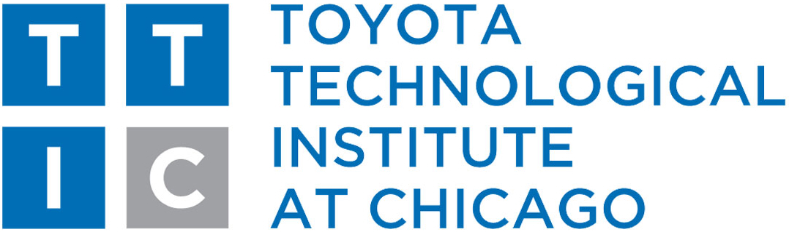
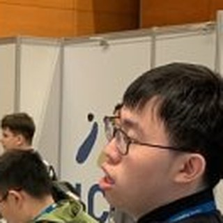
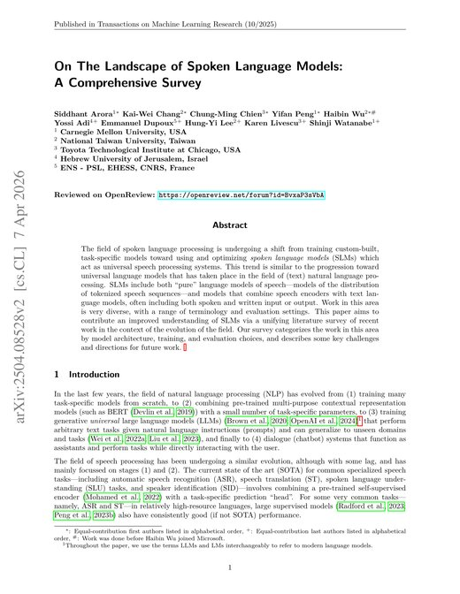

The tutorial is based on our survey.

Siddhant Arora*, Kai-Wei Chang*, Chung-Ming Chien*, Yifan Peng*, Haibin Wu*, Yossi Adi†, Emmanuel Dupoux†, Hung-yi Lee†, Karen Livescu†, Shinji Watanabe†
* Co-first authors · † Co-last authors (alphabetical within each group)
Transactions on Machine Learning Research (TMLR), 2025